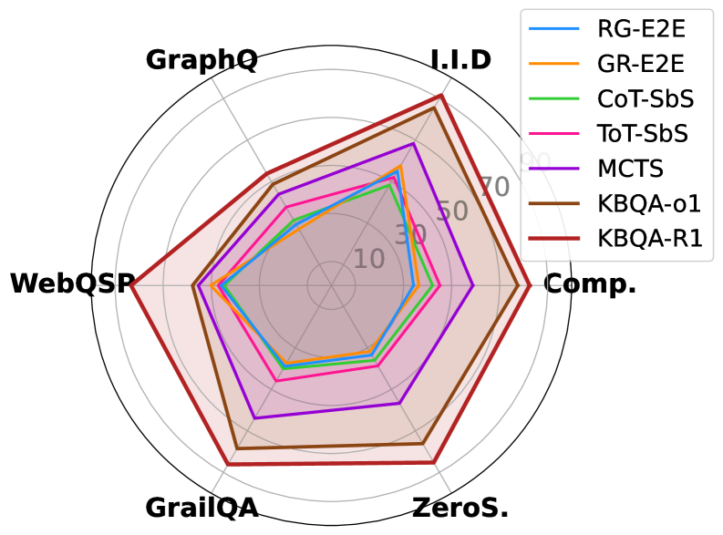

ICML 2026 审稿评分
4 / 4 / 4 / 5
主要贡献
- 首次将 RL 成功应用于结构化知识推理
- 模型学会自主 trial-and-error 探索
- 端到端训练，无需中间步骤监督
- 多个 KBQA 数据集上取得 SOTA
对 Agent 方向：验证了 RL 后训练可赋予 LLM 自主使用结构化工具的能力
可推广性：RL 范式可迁移到 API、数据库、代码执行等更多工具调用场景

4 / 4 / 4 / 5
对 Agent 方向：验证了 RL 后训练可赋予 LLM 自主使用结构化工具的能力
可推广性：RL 范式可迁移到 API、数据库、代码执行等更多工具调用场景